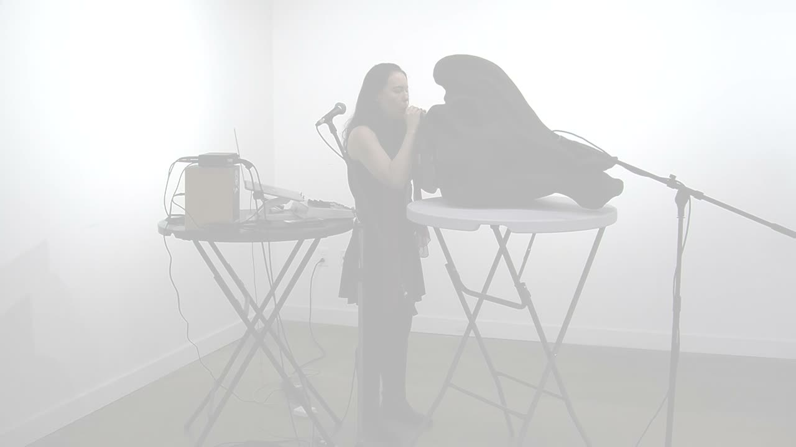
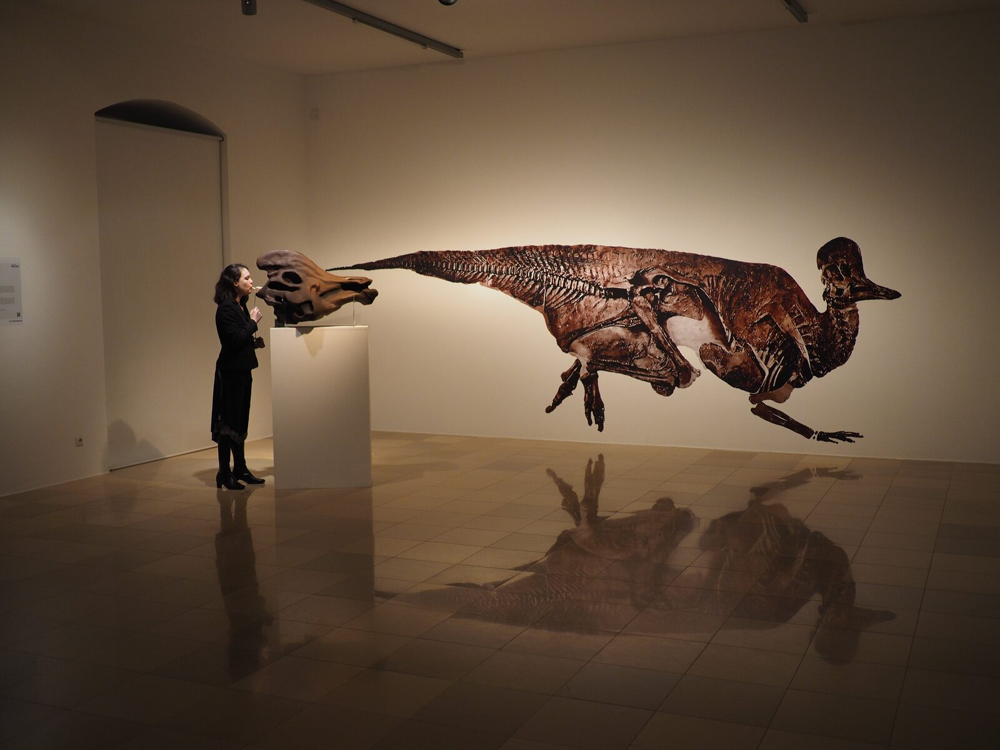

Hadrosaur Variations II
Project Description
Hadrosaur Variations II is a work for hadrosaur skull instrument, soprano, and live electronics. A Corythosaurus is a duck-billed dinosaur, a lambeosaurine hadrosaur that scientists hypothesize used its large head crest for sound resonation. The hadrosaur skull instrument is a musical instrument created from a replica of a subadult Corythosaurus skull and nasal passages by myself and my collaborator, Sharif Razzaque. The hadrosaur skull instrument was first created as an interactive exhibition, in which participants give voice to this dinosaur instruments by blowing into a mouthpiece, exciting a larynx mechanism and resonating the sound through the dinosaur’s nasal cavities and skull. Participants know the dinosaur through the controlled exhalation of their breath, how the compression of the lungs leads to a whisper or a roar. In a sense, they fleetingly experience being a dinosaur.
The CT scans of the subadult skull fossil and the endocast of its nasal passages and skull were used to 3D model and 3D print the skull. The CT scans and data were provided by Witmer Lab, Ohio University. A mechanical larynx was also created with specifications derived from research on this subadult skull. For instance, by scientists derived estimates of the subadult’s hearing range from measurements of the inner ear fossil, and these guided larynx design. I created this larynx with balloons to mimic the flexible material of vocal cords. I make different timbres and pitches by pulling the strings of the larynx, bending the balloons, and putting pressure at different points of the balloons.
In this work, I explore how to mimic the dinosaur with the soprano voice, and vice versa. I became particularly interested in coaxing melodies and distinct pitches from the hadrosaur skull instrument, as this was a challenging exercise.
Type of submission (Option 1 or Option 2)
Option 2: “NIMEs with a story”. This work has been shown as an interactive installation, and an earlier piece has been created for the instrument. This piece represent several years of work getting to know the instrument and creating different sounds and timbres with it.
Program Notes
Hadrosaur Variations II is a work for hadrosaur skull instrument, soprano, and live electronics. A Corythosaurus is a duck-billed dinosaur, a lambeosaurine hadrosaur that scientists hypothesize used its large head crest for sound resonation. The hadrosaur skull instrument is a musical instrument created from a replica of a subadult Corythosaurus skull and nasal passages. Musicians give voice to this dinosaur instruments by blowing into a mouthpiece, exciting a larynx mechanism and resonating the sound through the dinosaur’s nasal cavities and skull. The CT scans of the subadult skull fossil and the endocast of its nasal passages and skull were used to 3D model and 3D print the skull, and scientific research was used to guide the creation of the mechanical larynx.
In Hadrosaur Variations II, I explore how to mimic the dinosaur with the soprano voice and vice versa. I became interested in coaxing melodies and distinct pitches from the hadrosaur skull instrument because this was a challenging exercise. To begin the work, I create a hadrosaur call within the hypothesized vocal range of the dinosaur. Then, I begin to explore the instrument as a sound and respond with soprano voice. Hadrosaur and human interplay and build atop one another.
Media

▶Hadrosaur Variations II


Photo of the hadrosaur skull instrument, Rawr
Ethics Statement
The hadrosaur skull instrument, Rawr: A Study in Sonic Skulls, has been made accessible to the public as an interactive installation displayed at museums and galleries open to the public at several locations. The work does require a lot of lung capacity to blow, but children as young as three years old have been able to make sound. Upon further funding, we are planning to conduct workshops for public engagement. No empirical user studies have been performed with the instrument, so issues of inclusion in that context are not relevant to this work.
Currently, balloons must be replaced on the instrument every few weeks during normal practice and every week during public use during installation. However, we are working on a hybrid mechanical/computational model of the larynx that would be more sustainable. Additionally, in our current research, we are working on open source versions of other hadrosaur skulls and larynges so that others can reproduce the instrument, and it can be more accessible. However, we were not given permission to make the subadult Corythosaurus CT data used for this particular instrument to the public, and thus, the instrument, Rawr, will not be made open-source.
The hadrosaur skull musical instrument, Rawr, was funded by the GPSA of Arizona State University.
Acknowledgements
I acknowledge my collaborator Sharif Razzaque for Rawr! A Study in Sonic Skulls, the instrument featured in Hadrosaur Variations. I also acknowledge the help and support of: Carlo Sammarco for 3d modeled and printed the nasal passages for the first prototype (the second prototype is shown in the video, but the first prototype informed the second), Garth Paine for advice and counsel, Brent Brimhall for assistance with mechanical engineering and building the first pedestal, Lawrence Witmer for providing the 3D model and endocast of the skull, Gordon Bergfors for aiding in 3d modeling and CNC machining, Sallye Coyle for aiding for aiding in 3d modeling, CNC machining, and use of her Shopbot CNC machine, and ASU GPSA for the 2012-13 GPSA Research Grant.